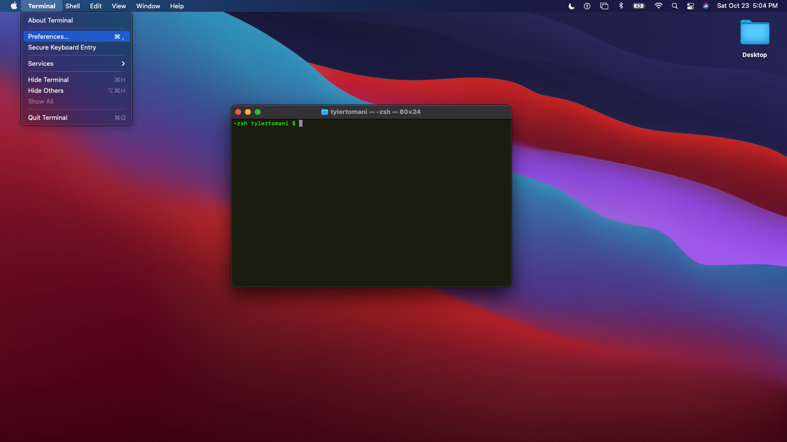
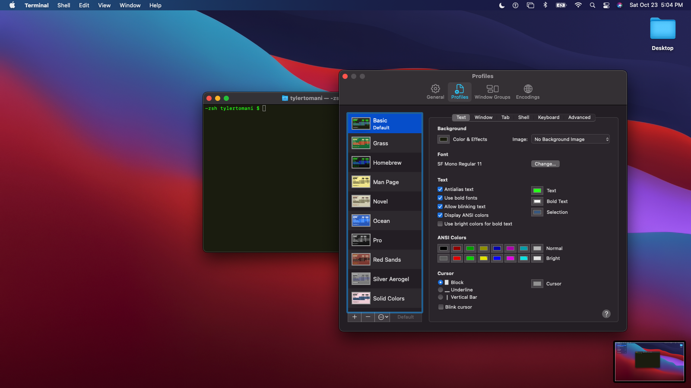
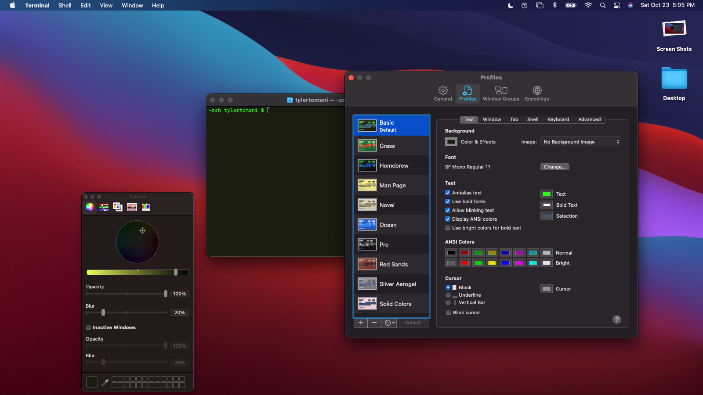
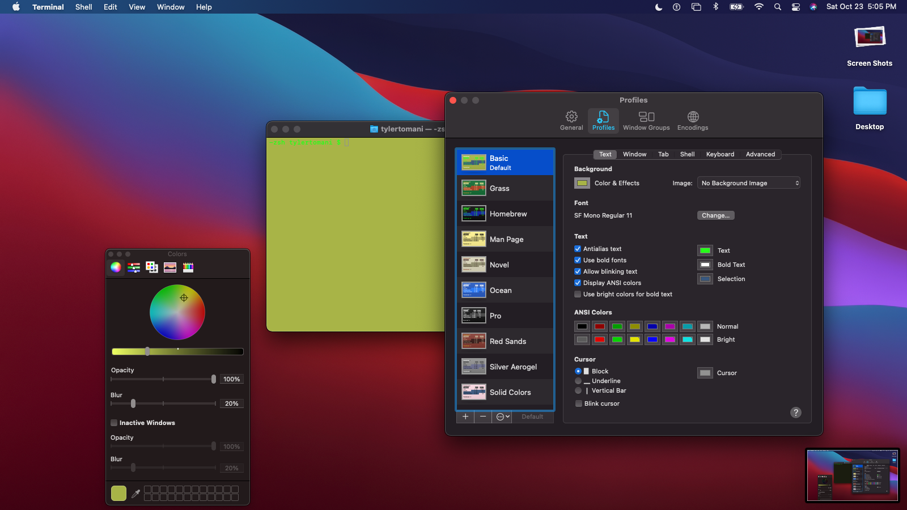
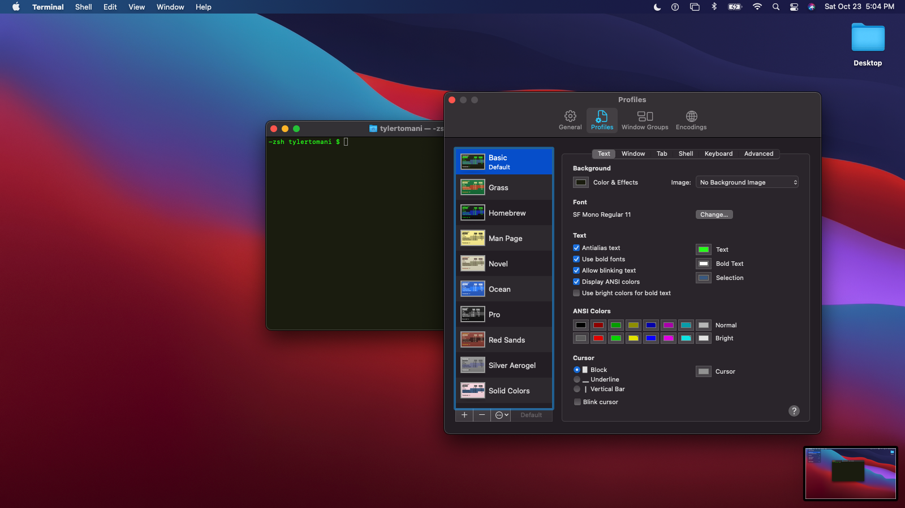
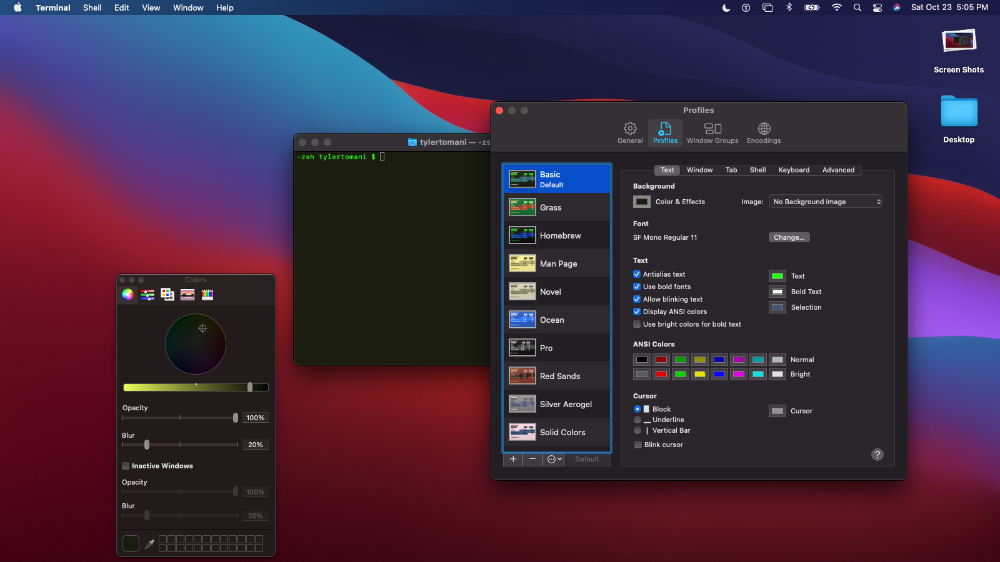
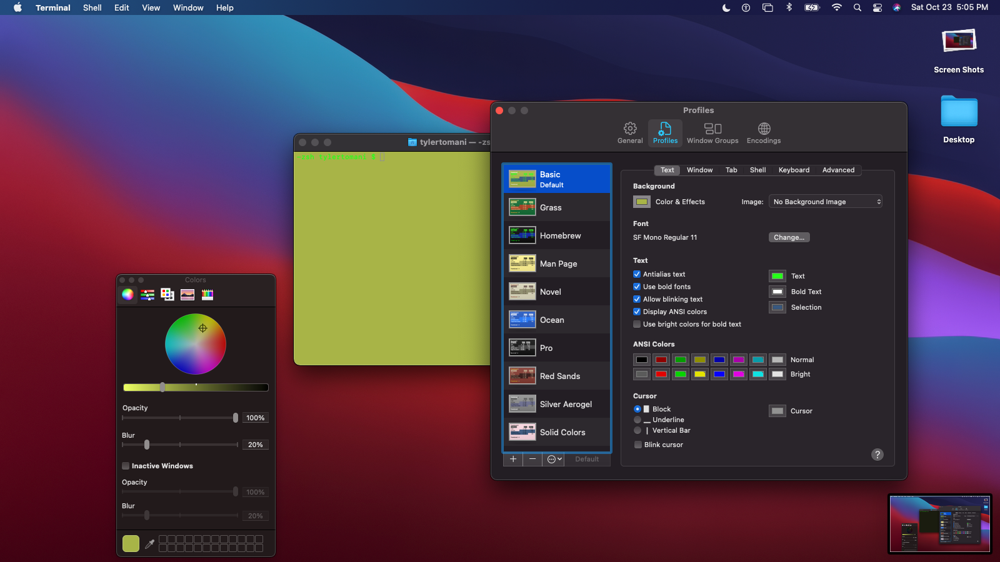

1. Customize Colors in Preferences
go inside preferences to cuztomize text and background colors along with font styles
  implement javascript so that numbers from the keyboard jump to sections on the page
go inside preferences to cuztomize text and background colors along with font styles
  